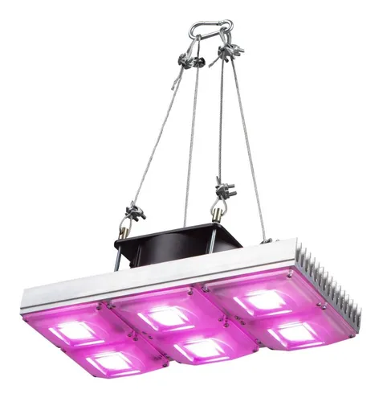

Led FullSpectrum
Nuestros paneles LED -Full Spectrum- para el autocultivo estan fabricados con los mejores materiales del mercado. Cubren el ciclo completo de cultivo (crecimiento y floración). Solo es necesario enchufarla para comenzar con tus cultivos.
Especificaciones técnicas LED COB 100w:
-Potencia real: 100 watts
-Consumo Eléctrico: 125 watts
-Área de cobertura: 0,45 m x 0,45 m
-Distancia óptima a las plantas: 25 cm
-Espectro: 380-840nm
-Alimentación: 220v 50htz
-Lúmenes: 13000lm
-Disipador (20 cm x 13,2 cm) de aluminio anodizado 100% puro de 16 aletas.
Descripcion:
-Chips originales led cob de 50w 6500 lúmenes.
-Última generación con espectro mejorado bornera, varistor y sensor térmico además cuenta con una capa siliconada que protege el LED.
-Coolers de aluminio con doble rulemán de uso continuo de 12 cm por 12 cm, cálidad muy superior a los cooler con bujes.
-Interlock portafusible para mayor seguridad del panel.
-Conexiones seguras y aisladas con cinta termocontraíble.
